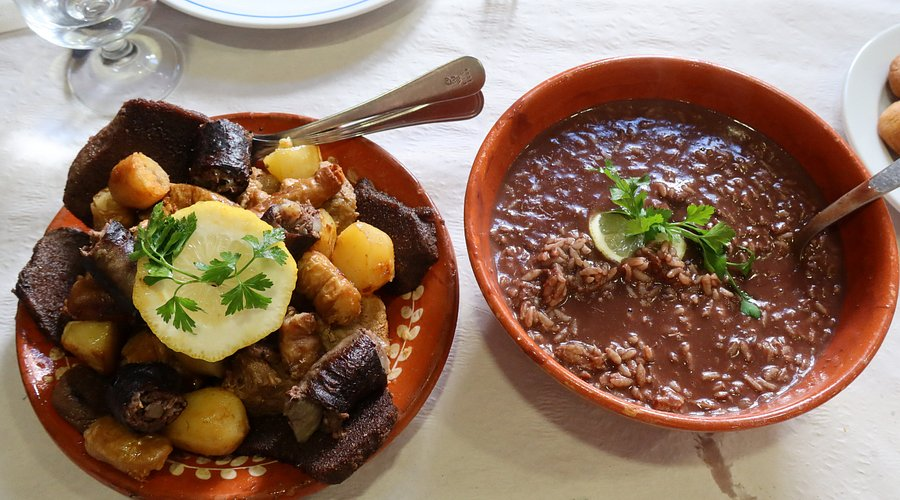
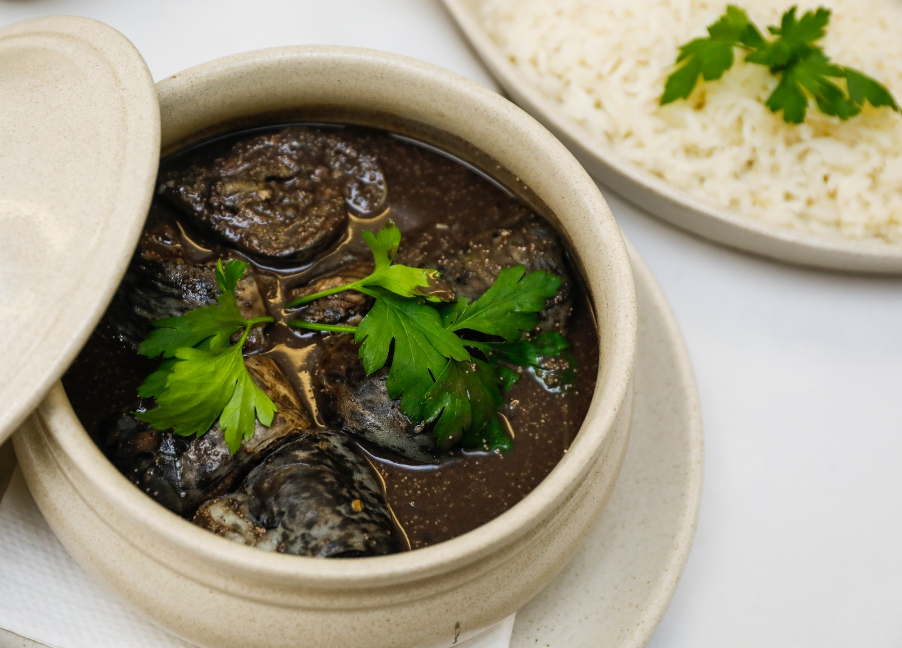
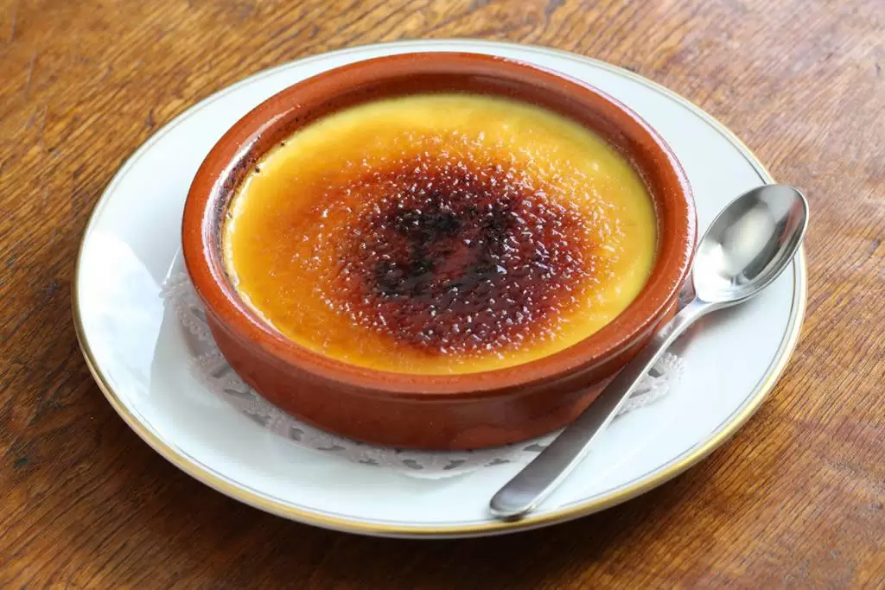
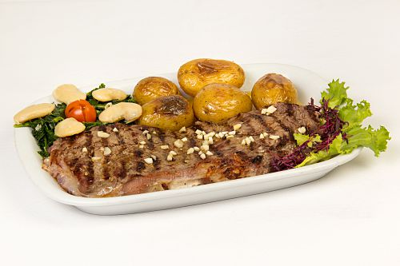
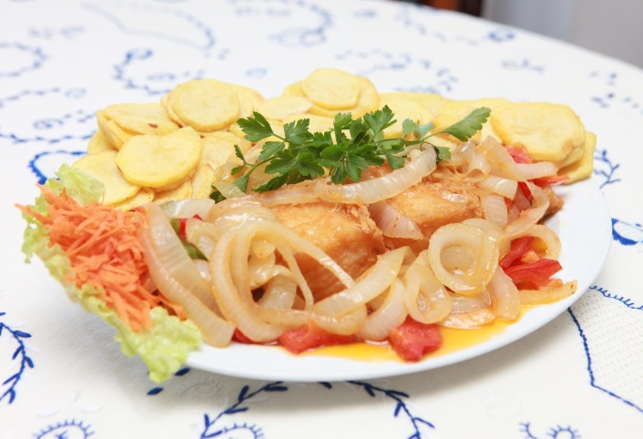

Capital do Sarrabulho e berço dos sabores autênticos do Alto Minho
Descubra os pratos que fazem de Ponte de Lima a capital gastronômica do Alto Minho
Ponte de Lima é coração da sub-região vitivinícola do Vale do Lima, famosa pelos vinhos verdes de casta Loureiro - frescos, aromáticos e com notas cítricas. Em 2025, a região foi reconhecida como "European Region of Gastronomy and Wine", destacando a excelência dos vinhos locais como o "Loureiro do Vale do Lima". Visite adegas tradicionais e participe de degustações guiadas.
O ex-líbris da gastronomia limiana, este prato tradicional leva arroz, sangue de porco, várias carnes e é temperado com cominhos. Durante a Feira do Porco e Delícias do Sarrabulho, servem-se mais de 10.000 doses em 50 restaurantes locais. O Clube de Gastronomia de Ponte de Lima já levou esta iguaria para eventos em Bruxelas, Paris e até Winnipeg, no Canadá.
Prato sazonal (entre janeiro e abril) que utiliza a lampreia do rio Lima, preparada com vinho tinto e pão de milho. Tradicionalmente servido nas feiras quinzenais da vila, é um dos pratos mais emblemáticos da região. A lampreia é pescada no rio Lima e preparada seguindo receitas centenárias que atraem gourmets de todo o país.
Herança das feiras tradicionais de Ponte de Lima, este prato mantém-se nos cardápios das tabernas e restaurantes locais. O bacalhau é cozinhado com cebola, alho, louro e azeite, resultando num sabor intenso e reconfortante. Recentemente, o Chef Paulo Santos recriou a receita histórica do "Bacalhau à Eça de Queirós", resgatando tradições culinárias.
Prato típico da região, feito com carne de vaca mirandesa (raça autóctone) marinada em vinho verde e alhos, depois grelhada. Acompanha batata cozida e grelos. Em Ponte de Lima, o "Naco à Moda de Bertiandos" é uma variação famosa, com molho especial à base de vinho verde Loureiro.
A Feira Quinzenal de Ponte de Lima (desde 1125) e o Mercado Municipal são locais imperdíveis para provar iguarias locais. Não perca a Feira do Porco (março) e o Festival Gastronómico do Arroz de Sarrabulho (novembro), onde pode provar estas especialidades preparadas pelos melhores chefs da região.
Conheça visualmente as delícias que tornam esta região única





